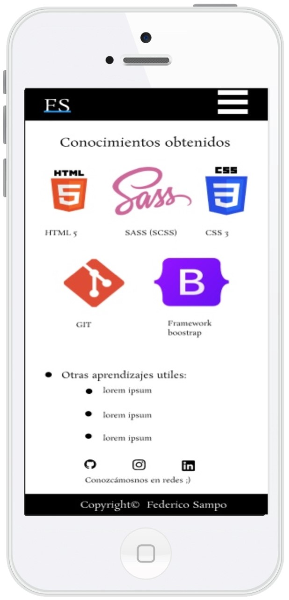

Hola a todos, mi nombre es Federico Sampo y este es mi portfolio web.

Hola a todos, mi nombre es Federico Sampo y este es mi portfolio web. Tengo 18 años y soy de la Buenos Aires, Argentina. Empece a conocer el mundo del desarrollo hace aproxidamente dos años en una orientación de mi colegio. Proyecto estudiar sobre desarrollo front-end y luego back-end cuando tenga la posibilidad. Me encanta desarrollar y todos los días busco aprender más y más para poder abarcar muchos mas aspectos de la programación. A futuro también proyecto comenzar a estudiar la UTN (Universidad Tecnológica Nacional) en la cual creo que podría tener una base mas sólida en la cual apoyarme para mi carrera.
Al entrar en mi sitio espero que puedas conocer un poco más sobre mí, conozcas más como trabajo y puedas ver lo que es mi primer gran trabajo en este ambiente. Obviamente quedan muchas cosas las cuales se que se podran mejorar a futuro pero espero que lo visto te guste y creas que puedo seguir por este camino También estoy abierto a sugerencias que me puedan dar de cualquier tipo, ya que, creo que entre todos podemos ayudarnos a mejorar y hacer esta comunidad mucho más grande.



Conozcámosnos en redes ;)